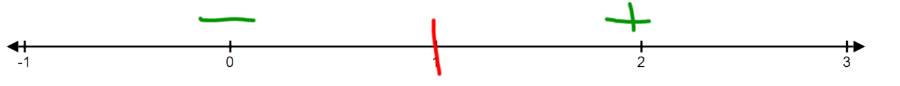

- (a)
- \(f(x)=\frac {x}{\sqrt {x^2-9}}\)
To find the domain, recall that a rational expression cannot have \(0\) in the denominator and a square root expression cannot have a negative number under the square root. Thus, \(x^2-9>0\). \(\implies (x-3)(x+3)>0\) The zeros are located at \(x=-3,3\). From this we can draw a sign chart for the expression, \(x^2-9\), and test values.alt=sign-chart showing that it is positive when x < -3 or when x>3, but is negative if -3<x<3.
We see that \(x^2-9>0\) on the interval \((-\infty ,-3)\cup (3,\infty )\). Thus our domain is \((-\infty ,-3)\cup (3,\infty )\).
Next we check for even/odd/neither.
\(f(-x)=\frac {-x}{\sqrt {(-x)^2-9}}\) which does not equal \(f(x)\) so \(f\) is not even
\(-f(x)=-\frac {x}{\sqrt {x^2-9}}\) which is equal to \(f(-x)\) so \(f\) is odd. - (b)
- \(g(x)= \frac {\sin (x)}{x}\)
- (c)
- \(h(t)= \ln (t^3-1)\)
To find the domain, recall that we cannot take the natural logarithm of \(0\) or a negative number. Therefore, \(t^3-1>0\). \(\implies (t-1)(t^2+t+1)>0\). The zero is located at \(t=1\). From this we can draw a sign chart and test values.

We see that \(t^3-1>0\) on the interval \((1,\infty )\). Thus our domain is \( (1,\infty )\).
Next we check for even/odd/neither.
\(h(t)\) is neither even nor odd because if \(t\) is in the domain, then \(-t\) is not in the domain.